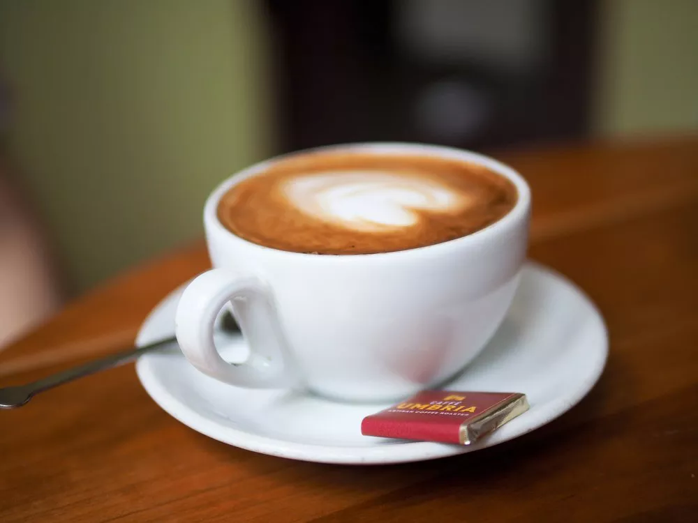
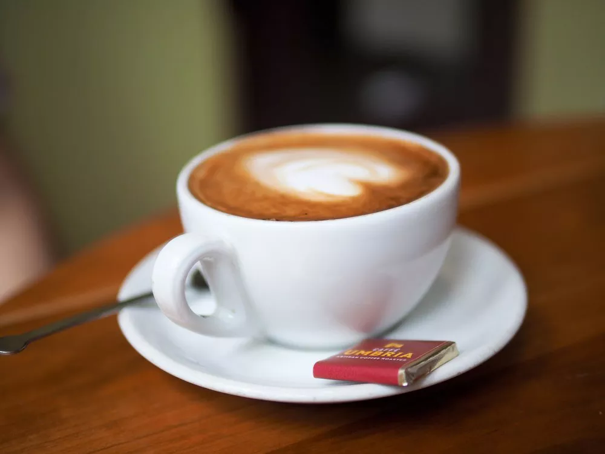
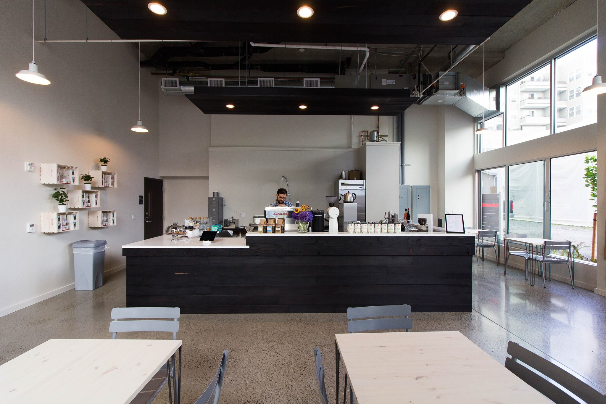

-
Caffè Umbria
 

It didn't take long for this ultra-minimalist shop to make its impression felt in West Seattle, where large windows let in natural light, decent-sized tables accommodate the remote-worker set, and beans from a variety of local roasters are featured alongside Portland's Heart Coffee Roasters and a monthly Nordic coffee pour-over option provided by Kaffe Box. Seasonal drinks like espresso soda, nitro and regular cold brew on tap, and beer and wine round out the impressive selection.
-
Caffé Vita
Here, customers can sit back, enjoy a well-made brew of their choosing with beans from an independent farmer, and watch the in-house roasting process of one of Seattle’s most famous coffee families.
-
Lighthouse Roasters

Lighthouse-roasted beans can be found all over the city, but to get them at their source, customers should venture to upper Fremont. The company roasts small batches all day long directly in its little shop, which means the coffee is fresher than fresh.
-
Sound and Fog

It didn't take long for this ultra-minimalist shop to make its impression felt in West Seattle, where large windows let in natural light, decent-sized tables accommodate the remote-worker set, and beans from a variety of local roasters are featured alongside Portland's Heart Coffee Roasters and a monthly Nordic coffee pour-over option provided by Kaffe Box. Seasonal drinks like espresso soda, nitro and regular cold brew on tap, and beer and wine round out the impressive selection.